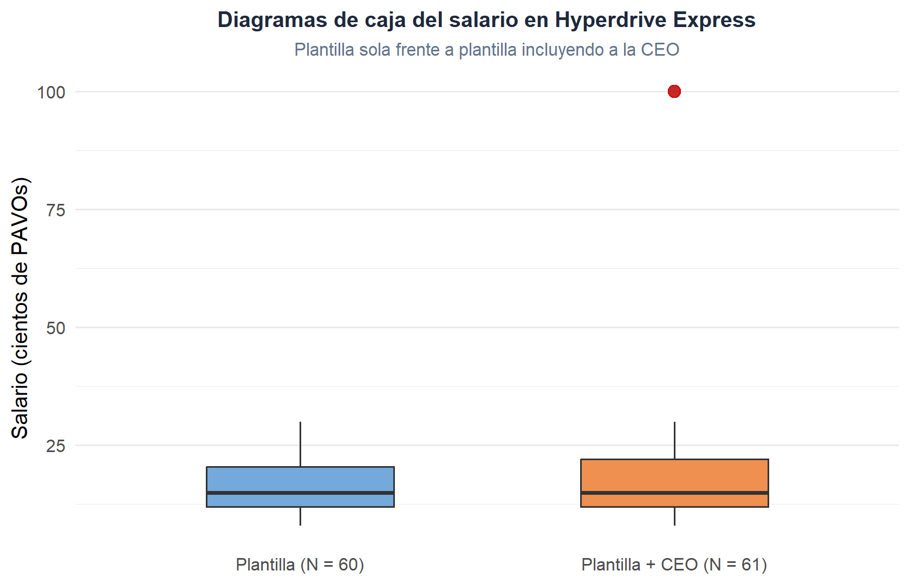
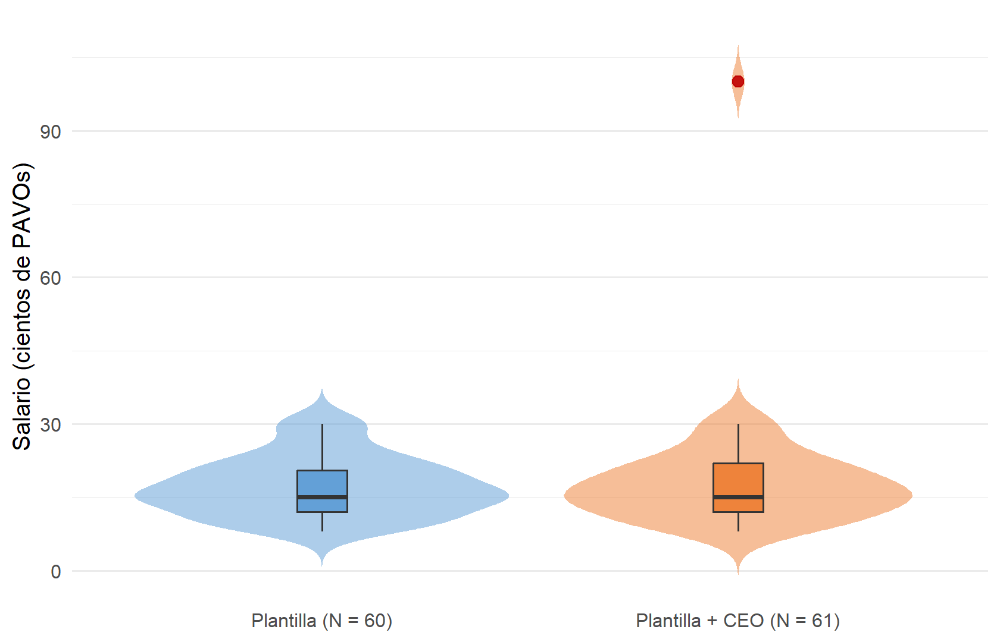
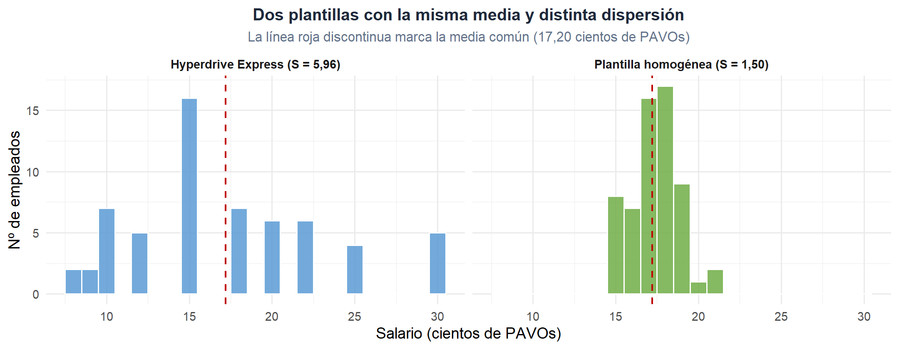
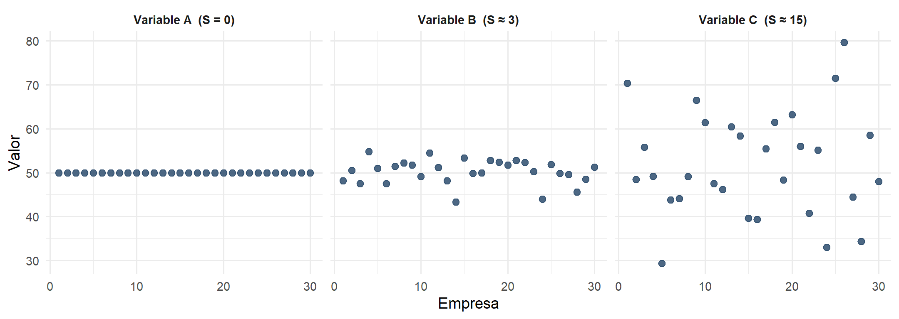
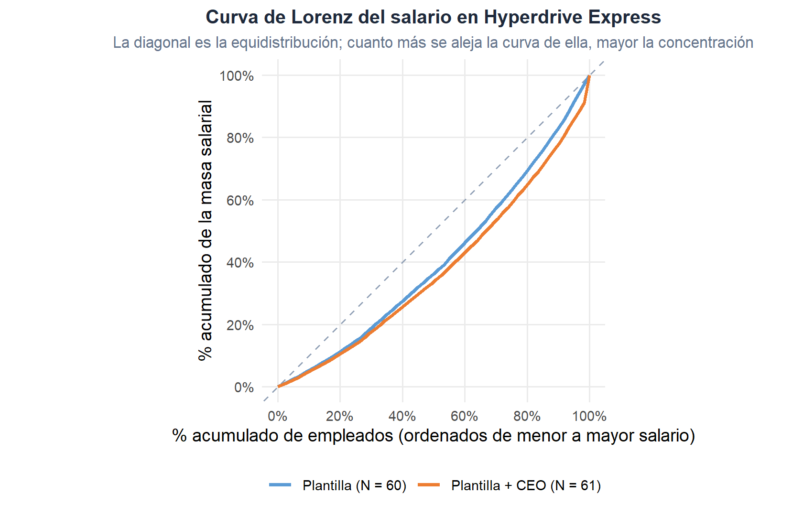
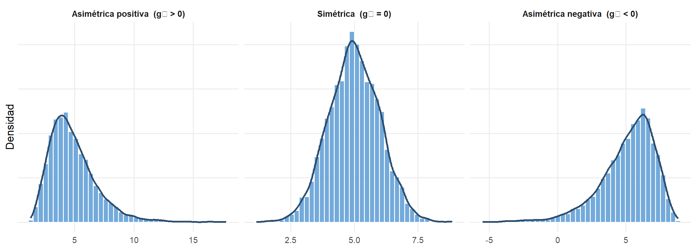
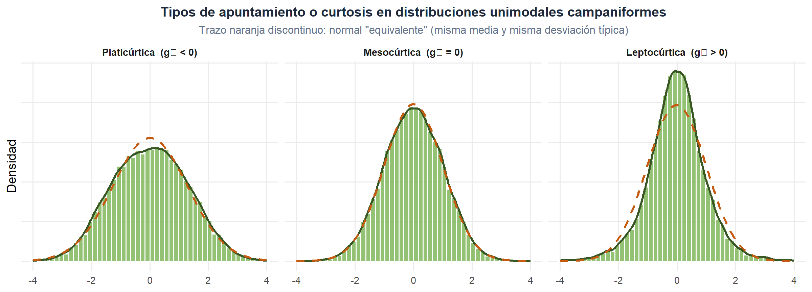

3 Variable estadística unidimensional.
Figura 3.1. Una característica, una variable. Y mucha información.
Cuadros de mando y medidas de resumen: síntesis para decidir.
En el capítulo anterior hemos aprendido a organizar la información: pasar de una tabla de casos y características a distribuciones de frecuencias, con sus gráficos asociados. Ese paso es imprescindible, pero rara vez suficiente. Una plantilla de 60 personas cabe en una tabla; una de 6.000 no, y un directivo que tenga que decidir sobre política salarial no querrá bucear cada semana en una nube de puntos. Necesitamos medidas de resumen: unos pocos números que capturen lo esencial de la distribución de una variable.
Este capítulo se dedica precisamente a eso, al análisis univariante de una variable cuantitativa: cómo se sitúa (posición), cómo se reparte alrededor de esa posición (dispersión) y qué forma tiene (asimetría y curtosis). Damos por supuesto el paso previo que ya trabajamos en el capítulo anterior —la depuración de los datos—; ninguna medida, por bonita que sea, sobrevive a un fichero mal depurado.
3.1 Del dato bruto a la medida: por qué necesitamos resumir.
Una medida estadística es un instrumento matemático que extrae y sintetiza la información contenida en una distribución de frecuencias. Con muy pocos números —a menudo uno o dos— intentamos responder a preguntas del tipo:
- ¿Alrededor de qué valor se concentran los datos?
- ¿Están todos parecidos entre sí o hay mucha diversidad?
- ¿La distribución se reparte de forma equilibrada o hay una cola larga hacia un lado?
- ¿Hay muchos casos extremos o casi todos rondan el valor central?
La respuesta a cada una de estas preguntas corresponde a un tipo de medida:
| Tipo de medida | Qué mide | Ejemplos habituales |
|---|---|---|
| Posición central | En torno a qué valor se sitúa la distribución. | Media aritmética, mediana, moda. |
| Posición no central | Puntos que dividen la distribución en grupos con el mismo número de casos. | Cuartiles, deciles, percentiles. |
| Dispersión | Cuán separados están los valores de la medida central. | Varianza, desviación típica, coeficiente de variación. |
| Forma | Grado y sentido de la deformación respecto a un patrón simétrico y campaniforme. | Coeficientes de asimetría y de curtosis de Fisher. |
Tabla 3.1. Los cuatro grandes bloques de medidas para una variable.
La mayor parte de estas medidas solo tienen sentido para variables en escala métrica. Algunas —como la mediana o la moda— pueden aplicarse también a atributos ordinales o nominales, con las adaptaciones oportunas. A lo largo del capítulo iremos indicando en cada caso el alcance.
Antes de calcular la primera media conviene recordar que ninguna medida sobrevive a un fichero mal depurado. En el capítulo 2 dedicamos la sección 2.6 a los dos problemas recurrentes —valores perdidos y casos atípicos— con sus tipologías (MCAR, MAR, MNAR), estrategias de tratamiento y reglas de detección. Damos por hecho todo aquello y, a partir de aquí, trabajamos sobre datos ya depurados. Volveremos, eso sí, sobre los outliers en 3.3.2, cuando dispongamos de cuartiles para concretar la regla operativa del box-plot; y sobre su efecto en las medidas de forma en 3.6, donde media, varianza y coeficientes de Fisher pondrán en evidencia hasta qué punto un único caso extremo puede reescribir todo un resumen. La CEO de Hyperdrive Express, con su salario de 100 cientos de PAVOs, nos hará ese servicio.
3.2 Medidas de posición central.
Las medidas de posición central intentan responder a la pregunta: “si tuviese que elegir un único número que represente a toda la distribución, ¿cuál elegiría?”. Las tres candidatas clásicas son la media aritmética, la mediana y la moda. Cada una responde a una intuición distinta, y por eso ninguna hace redundantes a las demás.
Trabajaremos con la plantilla de 60 empleados de Hyperdrive Express que ya conocimos en el capítulo anterior. Su distribución salarial va desde los 8 hasta los 30 cientos de PAVOs, con 16 empleados concentrados en la retribución más frecuente (15 cientos de PAVOs) y frecuencias menores en los extremos.
3.2.1 Media aritmética.
La media aritmética de una distribución de frecuencias de una variable \(X\) es
\[ \overline{x} = \frac{1}{N}\sum_{i=1}^{h} x_i \, n_i. \]
Si cada valor aparece una sola vez (distribución de frecuencias unitarias), se reduce a la conocida \(\overline{x} = \frac{1}{N}\sum_{i=1}^{N} x_i\).
Aplicada a la plantilla de Hyperdrive Express:
\[ \overline{x} = \frac{8\cdot 2 + 9\cdot 2 + 10\cdot 7 + \ldots + 30\cdot 5}{60} = \frac{1\,032}{60} = 17{,}20 \text{ cientos de PAVOs.} \]
La cifra tiene una interpretación muy útil: es el centro de gravedad de la distribución. Si mañana la compañía decidiese pagar a todos los empleados exactamente lo mismo sin variar la masa salarial total, ese salario común sería 17,20 cientos de PAVOs. La media, dicho de otro modo, es el resultado del reparto igualitario de la variable entre todos los casos.
Ventajas:
- Es única y siempre calculable en variables cuantitativas.
- Utiliza toda la información de la distribución.
- Se manipula bien algebraicamente, lo que la hace omnipresente en la Estadística Inferencial.
Inconveniente principal: es muy sensible a los valores extremos. Si añadimos a la CEO (100 cientos de PAVOs), la media salta a 18,56, aunque solo uno de los 61 empleados cobra más de 30. Un único outlier es suficiente para desplazar la media hacia una zona en la que no está prácticamente nadie.
Otras medias. Menos frecuentes pero útiles en contextos específicos son la media geométrica, adecuada para promediar variaciones acumulativas (típicamente tasas de crecimiento financieras), y la media armónica, adecuada cuando la variable es un cociente entre dos magnitudes (velocidades, productividades, precios por unidad). No las trabajaremos aquí, pero conviene saber que existen y que “la media” es en realidad una familia de medias.
3.2.2 Mediana.
La mediana es el valor de la variable que ocupa la posición central una vez ordenados los casos de menor a mayor. Divide la distribución en dos mitades con el mismo número de individuos: la mitad con valores menores o iguales, y la mitad con valores mayores o iguales.
Como el número total de empleados de Hyperdrive Express es par (\(N=60\)), rigurosamente existen dos posiciones centrales, la 30 y la 31. Se toma como convenio el promedio de los valores que ocupan esas dos posiciones. Ayudándonos de la frecuencia absoluta acumulada, ambos casos caen en el valor \(x = 15\), por lo que
\[ \text{Me} = \frac{15 + 15}{2} = 15 \text{ cientos de PAVOs.} \]
Cuando \(N\) es impar la mediana coincide directamente con el valor del caso que ocupa la posición \(\frac{N+1}{2}\).
Ventajas:
- Es robusta frente a valores extremos: al depender únicamente del orden y no de la magnitud, un outlier la desplaza como mucho una posición. En el ejemplo de la CEO, la mediana pasa de 15 a 15 (es decir, no se mueve).
- Se puede calcular también sobre atributos ordinales.
Inconvenientes: no siempre es única, y no utiliza toda la información numérica de la distribución (dos plantillas con valores muy distintos pueden tener la misma mediana).
3.2.3 Moda.
La moda es, sencillamente, el valor de la variable con mayor frecuencia. En Hyperdrive Express:
\[ \text{Mo} = 15 \text{ cientos de PAVOs}, \]
pues es el valor que se repite más veces (16 empleados).
Es la única medida de posición central que puede aplicarse también a atributos nominales, para los que ni “sumar” ni “ordenar” tienen sentido. En estos casos, la moda es el equivalente natural a “la categoría más frecuente” y en muchas ocasiones lo único razonable que se puede decir sobre la variable. Preguntar por el “departamento medio” o el “departamento mediano” de Hyperdrive Express no tiene mucho sentido; preguntar por el modal (Almacén) sí lo tiene.
Inconvenientes: puede no ser única. Cuando dos valores comparten el máximo, hablamos de una distribución bimodal; con más, de una distribución multimodal. Una distribución multimodal suele ser señal de que los datos ocultan varios subgrupos con comportamientos distintos: en el ejemplo, la plantilla podría estar mezclando de facto categorías profesionales muy diferentes, y quizá convenga separarlas antes de analizarlas juntas.
3.2.4 Datos agrupados y error de agrupamiento.
Cuando la variable es continua o toma muchos valores distintos, la distribución suele presentarse agrupada en intervalos, como vimos en el capítulo anterior al tratar las distribuciones de frecuencias. En ese caso, ni la media ni la mediana ni la moda pueden calcularse directamente sobre los datos originales, porque los datos originales ya no están. En su lugar utilizamos las marcas de clase \(x_i = (L_{i-1}+L_i)/2\) como representantes numéricos del intervalo. Esto introduce un pequeño precio a pagar: el error de agrupamiento.
Retomemos la tabla del capítulo anterior que agrupaba los salarios de Hyperdrive Express en intervalos de 5 cientos de PAVOs:
| Intervalo | \(x_i\) | \(n_i\) | \(N_i\) | \(x_i \cdot n_i\) |
|---|---|---|---|---|
| [5,10] | 7,5 | 11 | 11 | 82,5 |
| (10,15] | 12,5 | 21 | 32 | 262,5 |
| (15,20] | 17,5 | 13 | 45 | 227,5 |
| (20,25] | 22,5 | 10 | 55 | 225,0 |
| (25,30] | 27,5 | 5 | 60 | 137,5 |
| Total | 60 | 935,0 |
De aquí se obtiene la media agrupada
\[ \overline{x}_{\text{agr}} = \frac{935{,}0}{60} = 15{,}58 \text{ cientos de PAVOs}. \]
Frente a la media “verdadera” (calculada sobre los datos sin agrupar) de 17,20, la agrupación nos ha “comido” casi 1,6 cientos de PAVOs por empleado. La razón es sencilla: el intervalo (10,15] contiene sobre todo salarios de 15 (16 casos) y unos pocos de 12 (5 casos), por lo que la marca de clase 12,5 lo infrarrepresenta. Con intervalos amplios y frecuencias muy desiguales dentro de cada intervalo, el error de agrupamiento crece.
Análogas fórmulas existen para la mediana y la moda en distribuciones agrupadas. Localizado el intervalo mediano —aquel en el que caen los casos que ocupan las posiciones centrales—, la mediana se aproxima por interpolación lineal como
\[ \text{Me} \;=\; L_{i-1} \;+\; \frac{\dfrac{N}{2} - N_{i-1}}{n_i}\, c_i, \]
donde \(L_{i-1}\) es el extremo inferior del intervalo mediano, \(N_{i-1}\) la frecuencia absoluta acumulada hasta el intervalo anterior, \(n_i\) la frecuencia del intervalo mediano y \(c_i\) su amplitud. En nuestro ejemplo, la posición 30 cae en (10,15] y
\[ \text{Me} = 10 + \frac{30 - 11}{21}\cdot 5 = 14{,}52, \]
frente a los 15 exactos del cálculo sin agrupar.
Para la moda, se localiza el intervalo modal (el de mayor \(n_i\) si todos los intervalos tienen la misma amplitud, o el de mayor densidad de frecuencia \(d_i = n_i/c_i\) si no la tienen) y se aplica una interpolación similar. No la trabajaremos aquí en detalle, pero es útil conocer su existencia y saber que arroja el mismo tipo de aproximación.
¿Cuándo importa el error de agrupamiento? Cuando dispongamos de los datos originales, siempre es preferible utilizarlos. La agrupación en intervalos tiene sentido cuando el fichero de partida ya viene resumido (fuentes secundarias, publicaciones que solo aportan la tabla), o cuando trabajamos con variables continuas donde los “valores originales” son en realidad medidas con muchos decimales. Pero conviene tener presente que las medidas calculadas sobre datos agrupados son aproximaciones de las que obtendríamos con los datos sin agrupar.
3.3 Medidas de posición no central: los cuantiles.
La mediana es el valor que deja por debajo al 50 % de los casos. Nada nos impide preguntarnos por el valor que deja por debajo al 25 %, al 10 % o al 87 %. Esos valores son los cuantiles, y no son más que una generalización natural de la mediana.
Formalmente, un cuantil \(x_p\) (con \(0 < p < 1\)) es el valor de la variable que deja por debajo (menor o igual) a una proporción \(p\) de casos y, por diferencia, por encima al \(1-p\) restante. Los tres bloques más habituales son:
- Cuartiles: dividen la distribución en 4 partes iguales. Hay 3: \(Q_1\), \(Q_2\) y \(Q_3\), correspondientes a \(p = 0{,}25;\ 0{,}50;\ 0{,}75\). El segundo cuartil \(Q_2\) coincide, por definición, con la mediana.
- Deciles: dividen en 10 partes iguales. Hay 9: \(D_1, D_2, \ldots, D_9\), correspondientes a \(p = 0{,}1;\ 0{,}2;\ \ldots;\ 0{,}9\).
- Percentiles: dividen en 100 partes iguales. Hay 99: \(P_1, P_2, \ldots, P_{99}\).
Aplicados a la plantilla de Hyperdrive Express, los cuartiles son:
| Cuartil | Valor (cientos de PAVOs) | Interpretación |
|---|---|---|
| \(Q_1\) | 12 | El 25 % de la plantilla cobra 12 o menos. |
| \(Q_2\) | 15 | El 50 % cobra 15 o menos (mediana). |
| \(Q_3\) | 20,5 | El 75 % cobra 20,5 o menos. |
Tabla 3.2. Cuartiles del salario en Hyperdrive Express.
Una medida derivada muy útil es el recorrido intercuartílico o interquartile range (IQR):
\[ \text{IQR} = Q_3 - Q_1. \]
En el ejemplo, IQR \(= 20{,}5 - 12 = 8{,}5\) cientos de PAVOs. Podemos interpretarlo así: el “50 % central” de la plantilla se reparte en una franja salarial de 8,5 cientos de PAVOs de ancho. El IQR es una medida de dispersión robusta —al depender solo de los cuartiles y no de todos los datos, un outlier no lo altera— y aparecerá varias veces en lo que sigue.
3.3.1 El box-plot: síntesis visual de posición y outliers.
El box-plot lo conocimos ya en el capítulo 2 como herramienta de detección visual de outliers (recordemos la nave Trade Wind del astillero ARCTURUS). Ahora, con los cuartiles ya definidos, podemos concretar cómo se construye y por qué es la representación estándar para la detección de casos atípicos.
Propuesto por John Tukey en 1977, el diagrama de caja tiene una construcción directa:
- La caja va de \(Q_1\) a \(Q_3\) (contiene, por tanto, el 50 % central de los casos).
- Una línea horizontal dentro de la caja marca la mediana (\(Q_2\)).
- Dos segmentos (los bigotes) se extienden por arriba y por abajo hasta el mayor y el menor valor observado que no sean atípicos.
- Los casos atípicos, si los hay, se dibujan como puntos aislados.
¿Y qué es “atípico” a estos efectos? Tukey propuso una regla operativa —hoy universal— basada precisamente en el IQR:
- Un caso es atípico por arriba si su valor supera \(Q_3 + 1{,}5\cdot \text{IQR}\).
- Un caso es atípico por abajo si su valor es inferior a \(Q_1 - 1{,}5\cdot \text{IQR}\).
En la plantilla de 60 empleados de Hyperdrive Express, esos límites son \(12 - 1{,}5\cdot 8{,}5 = -0{,}75\) y \(20{,}5 + 1{,}5\cdot 8{,}5 = 33{,}25\). Ningún trabajador queda fuera de la franja: la plantilla, tal como está, no tiene outliers.
Es el momento de traer al análisis a la CEO de Hyperdrive Express que hemos venido anunciando. Su salario bruto mensual asciende a 100 cientos de PAVOs. Si añadiésemos su ficha al fichero de nóminas, obtendríamos 61 casos y esta distribución:
| \(x_i\) (Salario) | \(n_i\) | \(x_i\) (Salario) | \(n_i\) |
|---|---|---|---|
| 8 | 2 | 20 | 6 |
| 9 | 2 | 22 | 6 |
| 10 | 7 | 25 | 4 |
| 12 | 5 | 30 | 5 |
| 15 | 16 | 100 | 1 |
| 18 | 7 |
Tabla 3.3. Distribución de frecuencias del salario incluyendo a la CEO (\(N = 61\)).
Con la CEO dentro, \(N = 61\), \(Q_1 = 12\), \(Q_3 = 22\), IQR \(= 10\) y el límite superior de la regla de Tukey pasa a ser 37. Un salario de 100 cientos de PAVOs queda muy por encima: la CEO es formalmente un outlier, tal como el sentido común anticipaba. El box-plot lo señalará con un punto solitario muy por encima de la caja, exactamente como una boya alertando de bajos fondos.

Figura 3.2
A la izquierda, la plantilla de 60 empleados; a la derecha, incluyendo a la CEO. La caja apenas se mueve; el bigote se estira ligeramente; pero el outlier que aparece en solitario en el segundo gráfico es toda la información visual que necesitábamos.
3.3.2 Del box-plot al violín: cuando la caja se queda corta.
El diagrama de caja resume la distribución con cinco números (mínimo, \(Q_1\), mediana, \(Q_3\), máximo) y un puñado de outliers. Es una síntesis enormemente eficaz, pero paga un precio: no muestra la forma de la distribución dentro de la caja. Dos plantillas radicalmente distintas —una concentrada en torno a la mediana, otra con dos grupos claramente separados— pueden dar box-plots idénticos.
El gráfico de violín, propuesto por Hintze y Nelson (1998), combina lo mejor del box-plot con la lectura visual de un histograma suavizado. Sobre cada categoría se dibuja, en vertical, la densidad de la distribución (la “silueta” del violín), y suele incorporarse un box-plot fino en su interior. El resultado revela de un vistazo tanto la posición y la dispersión como la forma: simetría, asimetría, unimodalidad o bimodalidad.

Figura 3.3
El violín añade al box-plot una lectura de forma: la plantilla muestra una silueta claramente asimétrica —el cuerpo es ancho en torno a los 15 y adelgaza hacia arriba— que un simple box-plot no haría igual de evidente. Al incorporar a la CEO, la silueta apenas cambia; el punto rojo aislado sigue haciendo el trabajo de alerta.
En términos didácticos, box-plot y violín son complementarios: el primero sigue siendo insustituible para detectar outliers de un vistazo; el segundo aporta información sobre la forma que anticipa lo que veremos en las medidas de asimetría y curtosis. En la práctica profesional, cuando el tamaño muestral lo permite —y en 60 casos ya lo permite—, muchos analistas prefieren directamente el violín.
3.3.3 ¿Qué hacer con los outliers detectados?
Detectado un outlier, la decisión sobre qué hacer con él no puede tomarse mirando solo el número: como discutimos en 2.6.2, dependerá de si es un error, un caso legítimo pero excepcional, o un individuo perteneciente a otra población. Las estrategias son las mismas de allí —corregir, excluir, mantener con medidas robustas, winsorizar, transformar o analizar por separado—, y no las repetiremos.
En el caso de Hyperdrive Express, la CEO es un ejemplo casi de manual de la última: la política salarial de la plantilla y la retribución de la dirección son dos fenómenos distintos, y mezclarlos en una única media anima a extraer conclusiones erróneas —“en esta empresa cobran de media 18,56 cientos de PAVOs”— que ni la mediana ni el sentido común respaldan. Trabajaremos, por tanto, con la plantilla de 60 empleados a lo largo del resto del capítulo.
3.4 Momentos: la maquinaria común.
Antes de abordar las medidas de dispersión y de forma conviene detenerse un momento —nunca mejor dicho— en una construcción algebraica que subyace a todas ellas: los momentos de una distribución. Su utilidad es doble: unifican la notación, y permiten expresar unas medidas en función de otras sin arrastrar cuentas farragosas.
Dado un origen arbitrario \(O_t\) y un entero positivo \(r\), el momento de orden \(r\) respecto al origen \(O_t\) de una distribución de frecuencias se define como
\[ M_r = \frac{1}{N}\sum_{i=1}^{h}(x_i - O_t)^r \, n_i. \]
Dos elecciones de \(O_t\) son especialmente relevantes.
3.4.1 Momentos respecto al origen.
Si tomamos \(O_t = 0\) obtenemos los momentos respecto al origen:
\[ a_r = \frac{1}{N}\sum_{i=1}^{h} x_i^{\,r}\, n_i. \]
- \(a_1\) coincide con la media aritmética: \(a_1 = \overline{x}\).
- \(a_2\) es el promedio de los valores al cuadrado; aparecerá al escribir la varianza.
- \(a_3\) y \(a_4\) intervienen en las medidas de forma.
3.4.2 Momentos respecto a la media.
Si tomamos como origen la propia media, \(O_t = \overline{x}\), obtenemos los momentos centrales:
\[ m_r = \frac{1}{N}\sum_{i=1}^{h}(x_i - \overline{x})^r\, n_i. \]
- \(m_1 = 0\) siempre (por definición de media).
- \(m_2\) es la varianza de la distribución.
- \(m_3\) mide la asimetría (una vez normalizado).
- \(m_4\) mide la curtosis (idem).
3.4.3 Relación entre unos y otros.
Los momentos centrales pueden expresarse en función de los momentos respecto al origen mediante el desarrollo del binomio de Newton:
\[ m_r = \sum_{k=0}^{r} (-1)^k \binom{r}{k}\, a_1^{\,k}\, a_{r-k}. \]
Los casos particulares que utilizaremos son:
\[ \begin{aligned} m_2 &= a_2 - a_1^{\,2},\\[3pt] m_3 &= a_3 - 3\,a_2\,a_1 + 2\,a_1^{\,3},\\[3pt] m_4 &= a_4 - 4\,a_3\,a_1 + 6\,a_2\,a_1^{\,2} - 3\,a_1^{\,4}. \end{aligned} \]
En la práctica, esto significa que basta con calcular una vez los momentos respecto al origen (\(a_1, a_2, a_3, a_4\)) sobre la tabla de la distribución, y todas las medidas que siguen se obtienen combinándolos.
Para Hyperdrive Express, los momentos respecto al origen son:
| Momento | Valor |
|---|---|
| \(a_1\) | 17,20 |
| \(a_2\) | 331,37 |
| \(a_3\) | 7 038,90 |
| \(a_4\) | 161 964,37 |
Tabla 3.4. Momentos respecto al origen del salario en Hyperdrive Express.
De donde se sigue \(m_2 = 331{,}37 - 17{,}20^{2} = 35{,}53\), \(m_3 = 117{,}28\) y \(m_4 = 3\,313{,}22\). Los usaremos enseguida.
3.5 Medidas de dispersión.
Consideremos dos plantillas hipotéticas, ambas con media salarial de 17,20 cientos de PAVOs. En la primera —Hyperdrive Express— los salarios se reparten entre 8 y 30, con una desviación típica de 5,96. En la segunda —una compañía imaginaria en la que casi todos cobran cerca de la media— la desviación típica es de apenas 1,5. La media es idéntica; la fotografía, muy distinta.

Figura 3.4
En la plantilla de la derecha, la media describe con precisión lo que le ocurre a cada empleado. En la de la izquierda, la media es solo una referencia: muchos casos están lejos de ese valor, y ninguna decisión razonable sobre política salarial debería basarse solo en él.
La media es un dato incompleto: caracteriza dónde se sitúa la distribución, pero no cuánto se aparta cada individuo de esa posición. Las medidas de dispersión completan la fotografía, cuantificando cuán representativa es la medida central. Si la dispersión es baja, los valores están concentrados en torno a la media y esta la representa bien. Si es alta, los valores están muy repartidos y la media, aunque exista, describe pobremente lo que le ocurre a cada individuo.
3.5.1 Varianza y desviación típica.
La medida de dispersión por excelencia es la varianza, que promedia el cuadrado de las diferencias entre cada valor y la media:
\[ S^{2} = \frac{1}{N}\sum_{i=1}^{h}(x_i - \overline{x})^{2}\, n_i. \]
Elevar al cuadrado evita que las diferencias positivas y negativas se cancelen entre sí; a cambio, las unidades de la varianza son las de la variable al cuadrado (aquí, “cientos de PAVOs al cuadrado”, un objeto conceptualmente correcto pero de escasa carrera comercial). Por eso se maneja tanto la desviación típica:
\[ S = +\sqrt{S^{\,2}}, \]
que vuelve a las unidades originales y admite una lectura intuitiva. En Hyperdrive Express:
\[ S^{2} = m_2 = a_2 - a_1^{\,2} = 331{,}37 - 17{,}20^{2} = 35{,}53 \quad;\quad S = \sqrt{35{,}53} = 5{,}96. \]
La desviación típica es, aproximadamente, “cuántas unidades de la variable se aparta un caso promedio del valor medio”. Cuando decimos que \(S \approx 6\) cientos de PAVOs, estamos diciendo que un salario típico en Hyperdrive Express está a unos 6 cientos de PAVOs de la media (17,20). Este orden de magnitud coincide con la impresión visual del histograma del capítulo anterior.
Ambas medidas tienen dos limitaciones importantes:
- No están acotadas superiormente. Un valor de \(S = 5{,}96\) no es “mucho” ni “poco” en abstracto; depende de la escala de la variable.
- Son medidas absolutas: si mañana la empresa cambia la unidad de sus salarios a euros (1 cientos de PAVOs = 100 euros), tanto la media como la desviación típica se multiplicarán por 100, sin que la estructura de la distribución haya cambiado un ápice.
Para resolver ambos problemas se recurre a una medida relativa: el coeficiente de variación.
Un apunte técnico: cuasivarianza. En muchas aplicaciones —especialmente en Estadística Inferencial y Econometría, cuando la distribución que estamos analizando es una muestra y queremos generalizar a la población de origen— se utiliza la llamada cuasivarianza o varianza insesgada: \[\widehat{S}^{\,2} = \frac{1}{N-1}\sum_{i=1}^{h}(x_i - \overline{x})^{2}\, n_i.\] La única diferencia con la varianza es dividir entre \(N-1\) en lugar de entre \(N\). En muestras grandes las dos cantidades son prácticamente indistinguibles; en muestras pequeñas la cuasivarianza corrige un sesgo sistemático a la baja de la varianza como estimador. En Hyperdrive Express: \(\widehat{S}^{\,2} = 36{,}13\), frente a \(S^{2} = 35{,}53\). En este capítulo trabajaremos con la varianza clásica \(S^{2}\); volveremos a la cuasivarianza en el bloque de Inferencia, cuando cobre pleno sentido.
3.5.2 Varianza, dispersión e información.
Detrás de la varianza hay una idea más profunda que el mero cálculo: la capacidad de una variable para diferenciar unos casos de otros. Imaginemos tres variables medidas sobre las mismas 30 compañías R-Stars. En la primera, todas las empresas registran el mismo valor: no aporta ninguna información, porque no permite distinguir una empresa de otra. En la segunda, hay cierta diferencia entre compañías pero pequeña: nos permite hacer alguna distinción, pero con esfuerzo. En la tercera, los valores se reparten sobre un abanico amplio: cada empresa es fácilmente distinguible del resto.

Figura 3.5
La variable A no permite distinguir empresas entre sí; la B las distingue con cierta dificultad; la C las diferencia con claridad.
Cuanto mayor es la dispersión de una variable, mayor es su contenido informativo sobre los casos. La varianza —y la desviación típica— son, en ese sentido, medidas de la “cantidad de información” que la variable aporta sobre el grupo estudiado. Esta intuición está en la base de técnicas mucho más potentes que veremos en cursos avanzados, como el análisis de componentes principales, cuyo objetivo es precisamente conservar la mayor cantidad posible de varianza —de información— reduciendo el número de variables.
3.5.3 Coeficiente de variación de Pearson.
El coeficiente de variación de Pearson compara la desviación típica con la propia media:
\[ V = \frac{S}{|\overline{x}|}. \]
Es una medida adimensional (sin unidades) y por tanto directamente comparable entre variables medidas en escalas o unidades distintas.
En Hyperdrive Express, \(V = 5{,}96 / 17{,}20 = 0{,}346\), es decir, un 34,6 %. Puede leerse así: la desviación típica del salario supone aproximadamente un tercio del salario medio. Una lectura equivalente: en la desviación típica “cabe” el 34,6 % de la media.
¿Es eso mucho o poco? Como todas las medidas relativas, depende de con qué se compare. Un CV del 34,6 % en salarios de una plantilla parece razonable —hay categorías, antigüedades, cualificaciones—; el mismo CV en el tipo de interés interbancario sería descomunal. La utilidad del CV es sobre todo comparativa: contrastar la dispersión salarial de Hyperdrive Express con la de otra compañía, o la dispersión de dos variables completamente distintas (salarios y rentabilidades, por ejemplo) sin tener que preocuparse por las unidades.
Cuidado con el signo de la media. Cuando la media es cercana a cero (o cambia de signo entre grupos), el CV pierde interpretabilidad: pequeñas variaciones en la media generan CV desproporcionados. En esos casos se prefieren otras medidas relativas basadas en cuantiles, como el propio IQR normalizado por la mediana.
3.5.4 Comparando dos plantillas: un uso típico del CV.
Un ejemplo intuitivo previo: comparar la dispersión del salario en Hyperdrive Express (\(S = 5{,}96\) cientos de PAVOs) con la del margen operativo en el sector interestelar (\(S = 17{,}22\) puntos porcentuales) es un sinsentido: son unidades incomparables. Sus CV, en cambio (34,6 % y 28,6 %), están perfectamente en condiciones de dialogar: nos dicen que el salario tiene una dispersión relativa ligeramente mayor que el margen operativo, y esa afirmación es defendible con independencia de la escala.
El mismo razonamiento se aplica cuando comparamos la misma variable en dos poblaciones distintas. Supongamos que queremos comparar la dispersión salarial de Hyperdrive Express (Miranda, Gran Nube de Magallanes) con la de otra compañía galáctica del mismo tamaño operativo, Shuttlepod Movers (Arrakis, también en la Gran Nube de Magallanes). Los datos que resumen ambas plantillas son:
| Compañía | \(N\) | \(\overline{x}\) (cientos de PAVOs) | \(S\) | \(V\) |
|---|---|---|---|---|
| Hyperdrive Express | 60 | 17,20 | 5,96 | 0,346 |
| Shuttlepod Movers | 49 | 16,04 | 5,52 | 0,344 |
Tabla 3.5. Comparación salarial de dos compañías R-Stars.
En términos absolutos, Hyperdrive Express tiene una desviación típica mayor. Pero también una media mayor. El coeficiente de variación de ambas compañías es prácticamente idéntico: sus estructuras salariales relativas son gemelas, aunque los euros —perdón, los PAVOs— absolutos no lo sean. Este tipo de conclusión es el que hace del CV una medida imprescindible cuando queremos comparar la representatividad de la media entre distribuciones.
3.5.5 Curva de Lorenz e índice de Gini: la dispersión como concentración.
Hay una manera adicional —y muy expresiva en clave económica— de leer la dispersión de una variable: como concentración. En una distribución perfectamente igualitaria (todos los empleados cobran lo mismo, o todas las empresas facturan lo mismo), la mitad de la plantilla acumula la mitad de la masa salarial, el 10 % más rico acumula el 10 % de la retribución total, y así sucesivamente. Cuando la distribución se aparta de la igualdad —es decir, cuando la dispersión crece— esa proporción se rompe: unos pocos concentran una fracción desproporcionada del total.
La curva de Lorenz, propuesta por Max O. Lorenz en 1905, formaliza esta idea. Se ordenan los individuos de menor a mayor valor de la variable, y para cada porcentaje acumulado de individuos (eje horizontal) se representa el porcentaje acumulado de la masa total (eje vertical). Si la distribución es perfectamente igualitaria, la curva coincide con la diagonal (recta de equidistribución): al 50 % de los individuos corresponde el 50 % de la masa. Si la distribución es desigual, la curva se curva por debajo: al 50 % más pobre corresponde una fracción menor del 50 % del total.

Figura 3.6
En Hyperdrive Express sin la CEO (curva azul), el 50 % de la plantilla con menores salarios acumula solo el 36,2 % de la masa salarial, y el 10 % con salarios más altos concentra el 17,0 %. La curva se separa moderadamente de la diagonal: la plantilla es desigual, pero razonablemente equilibrada. Al incorporar a la CEO (curva naranja), la curva se hunde: ahora el 50 % con menores salarios acumula solo el 33,0 % del total, mientras que el 10 % con salarios más altos concentra el 22,1 %. Un solo caso extremo desplaza sensiblemente la concentración.
El área comprendida entre la diagonal y la curva de Lorenz mide, gráficamente, cuánta desigualdad hay. Corrado Gini propuso en 1912 una medida sintética de esa área, el índice de Gini:
\[ G = \frac{\text{área entre la diagonal y la curva de Lorenz}}{\text{área bajo la diagonal}}. \]
El índice varía entre 0 (equidistribución perfecta) y 1 (concentración máxima: un solo individuo acumula toda la masa). En términos operativos, para una variable no negativa \(x_1 \le x_2 \le \ldots \le x_N\) ya ordenada de menor a mayor:
\[ G = \frac{\sum_{i=1}^{N} (2i - N - 1)\, x_i}{N \sum_{i=1}^{N} x_i}. \]
Para nuestros datos:
- Plantilla sola: \(G = 0{,}193\). Comparable al de un país socialdemócrata típico (los países europeos con menor desigualdad de renta rondan Ginis de 0,25–0,30).
- Plantilla + CEO: \(G = 0{,}245\). Sube 5 puntos por incorporar un único caso, ilustración numérica limpia de la sensibilidad del Gini a los valores extremos.
A modo de referencia, el índice de Gini de los ingresos de las 300 compañías R-Stars —cuya asimetría positiva vimos al hablar de la forma— es de \(G = 0{,}603\): una concentración altísima, típica de las variables de tamaño empresarial. Las técnicas de dispersión relativa (CV, IQR normalizado) y las de concentración (Lorenz-Gini) son primos cercanos: miden lo mismo, pero desde ángulos distintos. El CV pregunta “¿cuán dispersa es la variable en relación con su media?”; el Gini, “¿cuán concentrada está la masa en unos pocos individuos?”. Para el estudiante de ADE, es útil manejar los dos lenguajes: el segundo dominará en Economía Aplicada, Fiscalidad y Distribución de la Renta.
3.5.6 Estandarización: la regla empírica.
Una consecuencia práctica de la desviación típica es que permite estandarizar los valores de la variable. El z-score de un caso es
\[ z_i = \frac{x_i - \overline{x}}{S}, \]
y expresa “a cuántas desviaciones típicas de la media se sitúa ese caso”. El z-score es adimensional, y permite comparar posiciones relativas de casos medidos en variables distintas: un empleado con \(z = 1{,}5\) en salario ocupa, dentro de su distribución, una posición equivalente a la de un empleado con \(z = 1{,}5\) en antigüedad, aunque las dos variables se midan en unidades completamente distintas.
En distribuciones aproximadamente normales se cumple la regla empírica 68–95–99,7: aproximadamente el 68 % de los casos cae dentro de \(\overline{x} \pm S\), el 95 % dentro de \(\overline{x} \pm 2S\) y el 99,7 % dentro de \(\overline{x} \pm 3S\). En Hyperdrive Express, el intervalo \(17{,}20 \pm 2 \cdot 5{,}96 = [5{,}28,\, 29{,}12]\) contiene 55 de los 60 empleados (91,7 %): aproximación razonable a la regla para una distribución que ya sabemos que no es perfectamente normal.
De aquí a un procedimiento operativo de detección de outliers hay solo un paso: como vimos en el capítulo 2, la regla del z-score marca como atípico todo caso con \(|z| > 3\). Es una regla simple, pero menos robusta que la del IQR: los propios outliers inflan la desviación típica y disimulan su propio carácter atípico. Volveremos sobre la estandarización cuando estudiemos la distribución normal.
3.6 Medidas de forma.
Las últimas medidas del capítulo abordan la forma de la distribución de frecuencias, es decir, cómo se deforma el histograma con respecto a un patrón ideal simétrico y campaniforme (la distribución normal, que estudiaremos en detalle en el bloque de Probabilidad). Distinguimos dos ejes de deformación:
- Asimetría: deformación horizontal en torno al eje que pasa por la media.
- Apuntamiento o curtosis: deformación vertical en cuanto a lo apuntado o achatado del pico.
Ambas medidas requieren, para tener sentido, que la distribución sea aproximadamente unimodal y campaniforme. Aplicadas a una distribución bimodal o con varias mesetas, sus resultados son técnicamente calculables pero conceptualmente engañosos: la moraleja es siempre mirar el histograma antes de fiarse del coeficiente.
3.6.1 Asimetría.
Una distribución es simétrica si su histograma se puede plegar por una línea vertical que pase por la media dejando ambas mitades como reflejos idénticos. En ese caso, media, mediana y moda coinciden en el mismo valor.
Cuando esa simetría se rompe, hablamos de:
- Asimetría positiva: la cola larga se extiende hacia la derecha (valores altos). Suele cumplirse que Mo \(<\) Me \(<\) \(\overline{x}\).
- Asimetría negativa: la cola larga se extiende hacia la izquierda (valores bajos). Suele cumplirse que \(\overline{x}<\) Me \(<\) Mo.

Figura 3.7
La asimétrica positiva tiene la cola larga hacia la derecha; la negativa, hacia la izquierda.
Para cuantificarla, Fisher observó que el momento central de orden 3, \(m_3\), tiene precisamente esa propiedad: es cero si la distribución es simétrica, positivo si tiene cola a la derecha y negativo si la tiene a la izquierda. Pero \(m_3\) tiene unidades (las de la variable al cubo) y no permite comparar distribuciones medidas en escalas distintas. Fisher lo normalizó dividiendo por \(S^{\,3}\), obteniendo el coeficiente de asimetría de Fisher:
\[ g_1 = \frac{m_3}{S^{\,3}}. \]
- \(g_1 > 0\) → asimetría positiva.
- \(g_1 = 0\) → simetría (condición necesaria pero no suficiente: existen distribuciones asimétricas con \(g_1 = 0\)).
- \(g_1 < 0\) → asimetría negativa.
Como referencia rápida y sin pretensión de recetario universal, valores de \(|g_1|\) por debajo de 0,5 suelen considerarse indicativos de “asimetría leve”; entre 0,5 y 1, “moderada”; y por encima de 1, “acusada”.
Aplicado al salario de Hyperdrive Express, y usando los momentos ya calculados:
\[ g_1 = \frac{m_3}{S^{\,3}} = \frac{117{,}28}{5{,}96^{3}} = 0{,}55. \]
La distribución presenta asimetría positiva moderada: la cola de salarios altos (los 25 y 30 cientos de PAVOs) empuja el valor medio (17,20) por encima de la mediana y la moda (ambas 15). Es una estructura típica de plantilla: muchos casos concentrados en niveles medios y bajos, y una cola relativamente corta de retribuciones altas.
El impacto de un outlier sobre la asimetría. Si volviéramos a incluir a la CEO en el análisis, con su salario de 100 cientos de PAVOs, el coeficiente saltaría hasta \(g_1 \approx 5{,}03\). Un solo caso extremo ha transformado una asimetría moderada en un valor que, en pura literalidad, sugeriría una distribución dramáticamente sesgada. En realidad la plantilla no ha cambiado; solo hemos mezclado en el saco un caso que pertenece a otra población. Este es el motivo por el que insistíamos en el capítulo anterior: los coeficientes de forma son especialmente sensibles a la limpieza previa del fichero.
Un vistazo económico: la asimetría del tamaño empresarial. Los ingresos anuales de las 300 compañías R-Stars presentan \(g_1 = 4{,}03\): una asimetría fuertemente positiva. Económicamente, este patrón —conocido como long tail o distribución de Pareto— es la norma, no la excepción, cuando se estudian variables de tamaño empresarial (activos, ingresos, plantilla, facturación). La media aritmética se sitúa en 218 miles de PAVOs; la mediana, en apenas 130. Utilizar la media como “empresa típica” sobredimensiona el sector: la mayor parte de las compañías está muy por debajo de esa cifra. Es el mismo fenómeno que ocurre con la renta en una economía real: reportar la renta media de un país sin acompañarla de la mediana distorsiona sistemáticamente la fotografía. Cuando \(g_1\) es alta, la mediana comunica mejor que la media.
La cola larga tiene, además, una consecuencia económica muy conocida: la concentración. Las 60 compañías R-Stars con mayores ingresos —el 20 % superior de la muestra— acumulan por sí solas el 64,1 % del total de ingresos del sector. No llegamos al 80-20 clásico de Pareto —para alcanzar el 80 % de los ingresos hacen falta las 106 empresas mayores, un 35 % de la muestra—, pero la lógica es la misma: unos pocos casos concentran una fracción desproporcionada del total. Este es el sustrato empírico del principio 80-20 que el estudiante de ADE volverá a encontrar en Contabilidad de costes (los productos “A” del análisis ABC), en Marketing (clientes clave) o en Producción (defectos críticos).
El margen operativo de esas mismas 300 compañías, en cambio, presenta \(g_1 = 0{,}23\): prácticamente simétrico. En un sector maduro y competitivo, los márgenes tienden a redistribuirse alrededor de una media estable: las empresas con márgenes muy altos atraen competencia que los erosiona; las que operan por debajo del promedio tienden a corregir o a desaparecer. La simetría es aquí una pista sobre la dinámica competitiva del sector.
3.6.2 Apuntamiento o curtosis.
La curtosis mide cuán apuntado es el pico central de la distribución respecto a un patrón concreto: la distribución normal. Distinguimos tres casos:
- Distribución mesocúrtica: apuntamiento similar al de la normal.
- Distribución leptocúrtica: más apuntada que la normal (mayor concentración de casos en torno al centro y colas más pesadas).
- Distribución platicúrtica: más aplastada que la normal (casos más repartidos y colas más ligeras).

Figura 3.8
La platicúrtica tiene el pico más aplanado y las colas más ligeras que la normal; la leptocúrtica, el pico más alto y las colas más pesadas.
Fisher se dio cuenta de que, para una distribución normal, se cumple \(m_4 = 3 S^{4}\), lo que sugiere construir la medida
\[ g_2 = \frac{m_4}{S^{\,4}} - 3, \]
el coeficiente de apuntamiento de Fisher. Con esta definición:
- \(g_2 > 0\) → distribución leptocúrtica.
- \(g_2 = 0\) → distribución mesocúrtica (comparable a la normal).
- \(g_2 < 0\) → distribución platicúrtica.
En Hyperdrive Express:
\[ g_2 = \frac{m_4}{S^{\,4}} - 3 = \frac{3\,313{,}22}{5{,}96^{4}} - 3 = -0{,}37. \]
Un valor ligeramente negativo indica una distribución platicúrtica suave: el pico central es algo más aplanado que el de una normal, resultado del reparto relativamente equilibrado de la plantilla en varios niveles retributivos (los 15 son mayoritarios, pero 12, 18, 20, 22 tienen todos frecuencias notables). No hay una única categoría que domine con abrumadora concentración: la plantilla está estratificada.
Como en el caso de \(g_1\), la interpretación cuantitativa depende del contexto y, sobre todo, requiere que la distribución sea aproximadamente simétrica para que la comparación con la normal tenga sentido. Con \(g_1 = 0{,}55\), nuestra distribución no lo es del todo, así que conviene tomar el valor de \(g_2\) como orientación y no como veredicto.
Y de nuevo, el efecto CEO. Si incluimos a la CEO, \(g_2\) se dispara hasta 31,2. Un solo caso extremo convierte una distribución razonablemente mesocúrtica en un artefacto de coeficientes gigantescos. Los coeficientes de asimetría y curtosis son quizá las medidas más sensibles a outliers de las que hemos visto, y por eso conviene calcularlos después de haber decidido conscientemente qué hacer con los casos extremos.
Un vistazo económico: colas pesadas y riesgo. La rentabilidad financiera (RENFIN) de las 300 compañías R-Stars presenta \(g_2 = 1{,}70\): claramente leptocúrtica. La mayor parte de las empresas obtiene rentabilidades próximas a la media del sector, pero unas pocas se sitúan muy por encima o muy por debajo. Esa cola pesada —cuatro o cinco casos que escapan del comportamiento general— es lo que en finanzas se conoce como riesgo de cola (tail risk), y explica buena parte de la crítica moderna al supuesto de normalidad en los modelos financieros clásicos: rendimientos extremos ocurren con más frecuencia de la que una distribución normal anticiparía.
El tamaño de la flota de las compañías, por el contrario, tiene \(g_2 = -1{,}19\): platicúrtica. Las compañías se reparten con notable homogeneidad entre distintos tamaños de flota, sin apenas casos extremos ni una concentración marcada en torno a un valor central. La distribución “casi uniforme” refleja un sector estructurado por segmentos: cargueros pequeños, medianos y grandes conviven en proporciones parecidas, sin un tamaño claramente dominante.
El mensaje para el analista es doble. Primero, la curtosis contextualiza el riesgo: valores altos avisan de sucesos extremos que la media y la desviación típica no capturan por sí solas. Segundo, no toda platicurtosis es “buena”: puede reflejar tanto una distribución sana y bien repartida como un sector fragmentado sin dinámica competitiva.
3.7 Recapitulación.
En este capítulo hemos aprendido a resumir una variable estadística unidimensional pasando de una tabla de frecuencias a un puñado de números interpretables. Los cuatro bloques de medidas son complementarios, no sustitutivos:
- Posición central (media, mediana, moda): dónde se sitúa la distribución.
- Posición no central (cuartiles y demás cuantiles): cómo se reparte por segmentos, con el box-plot —y su primo moderno, el gráfico de violín— como representación visual insustituible.
- Dispersión (varianza, desviación típica, CV): cuán representativa es la posición central. La varianza mide, además, la cantidad de información que la variable aporta sobre los casos. El CV, adimensional, permite comparaciones entre distribuciones de escala distinta. La estandarización (z-scores) traduce cualquier valor a “cuántas desviaciones típicas se aparta de la media”, cimiento de la regla empírica 68–95–99,7. La curva de Lorenz y el índice de Gini ofrecen una lectura complementaria, en clave de concentración, especialmente valiosa en variables económicas.
- Forma (asimetría y curtosis de Fisher): la forma del histograma respecto al patrón campaniforme simétrico. Los ejemplos R-Stars nos han enseñado a leer estas medidas en clave económica: distribuciones de tamaño con cola larga (el 20 % de las compañías concentra el 64 % de los ingresos), márgenes competitivos que gravitan hacia la simetría, rentabilidades con riesgo de cola.
Un principio ha atravesado todo el capítulo: antes de resumir, mire los datos. Los casos atípicos deben localizarse —el box-plot, apoyado en el IQR, es la herramienta estándar— y decidir si se corrigen, se eliminan, se conservan o se analizan por separado. Las medidas más elegantes son también, casi siempre, las más frágiles: media, varianza, coeficientes de forma, Gini… todas ellas se distorsionan con facilidad ante un puñado de valores extremos. La CEO de Hyperdrive Express nos lo ha ilustrado con creces: un solo caso extremo modifica la media un 8 %, dispara los coeficientes de forma y añade cinco puntos al índice de Gini.
Con estas herramientas ya podemos caracterizar cualquier variable de una empresa, un sector o una galaxia. En el capítulo siguiente daremos el salto a dos variables: cómo se relacionan entre sí y qué medidas resumen esa relación. Hyperdrive Express seguirá con nosotros, y también seguirán acompañándonos las 300 compañías R-Stars a las que ya nos hemos asomado en los ejemplos de asimetría, curtosis y concentración.